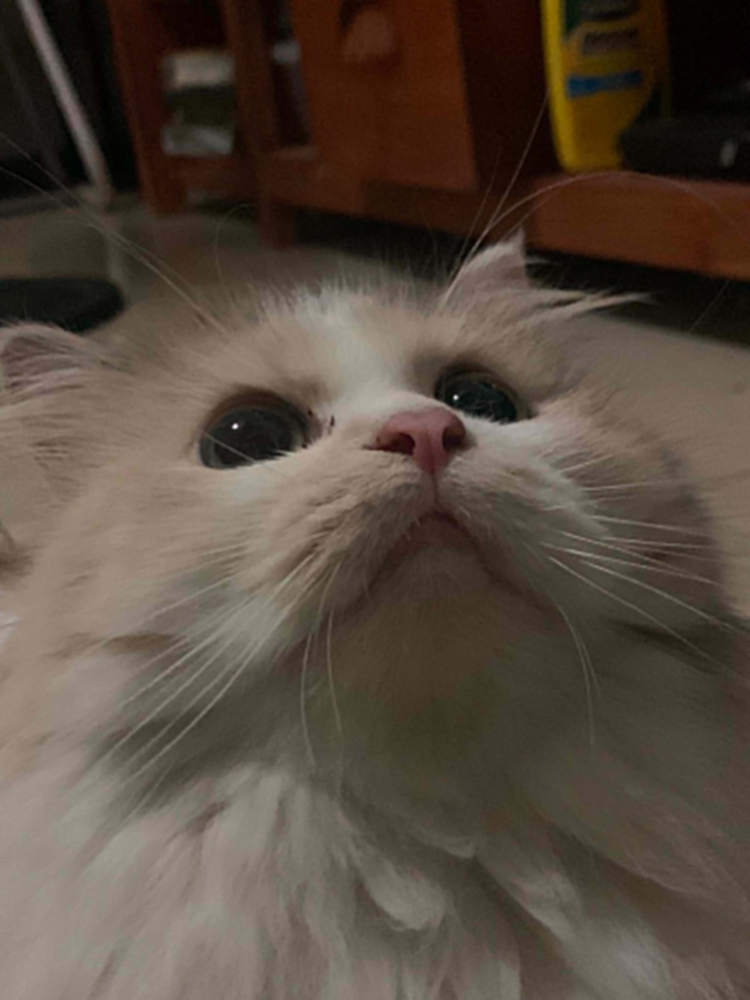

Music
Listening to Music helps me to relax and eases my nerves. Check out this one I'm currently listening to!
Physical Activities
Going to the gym, jogging, and especially, hiking! These activities help me feel more alive especially after a long day of sitting in front of the computer!
Goals:
- Hike Mt.Pulag
- Hike Mt.Ulap
- Jog for 20km in one go!
- Set a new PR at the Brench Press
Gaming
Playing games if more of a "love-hate" relationship because it's either it will be fun or stressful...But hey it works so~
Games I play (currently):
- Call of Duty: Mobile
- Wuthering Waves
- Mobile Legends: Bang Bang
- Roblox (lol)
- Valorant

Cat-Sitting
Meet Macchi (short for Macchiato)! She is my 2-year old cat who I love the most. Though I spend most of my time alone, I don't feel lonely because of her. I always spoil her with her favorite treats and wet food. Though there are time that she surprises me (by literally putting a cockroach and a dead mice on my pillow), I know that it is just her own way showing that she loves me, too!